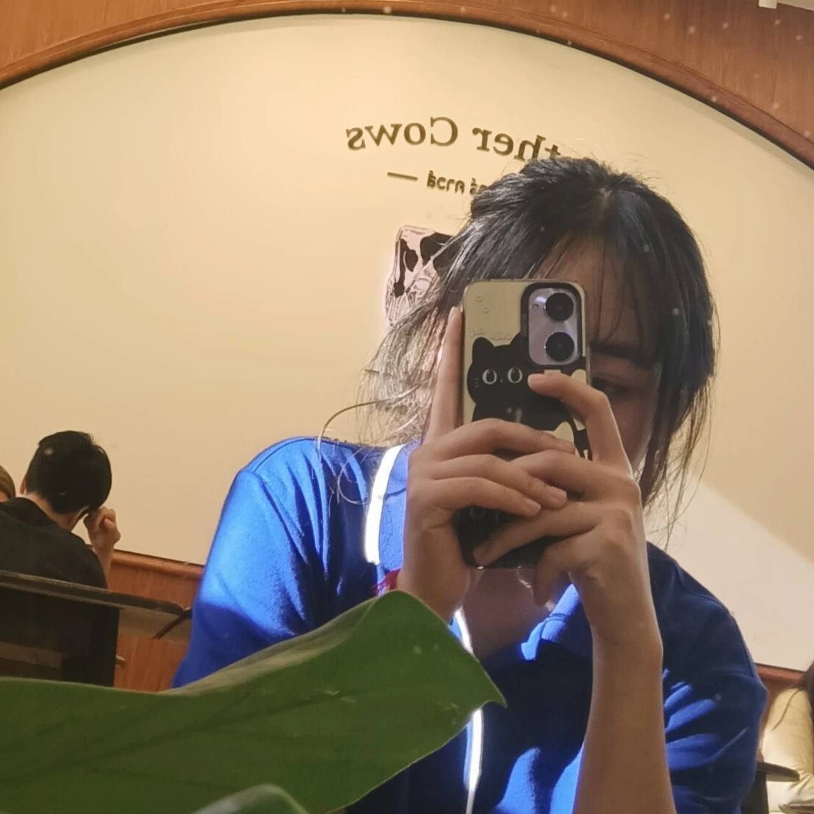
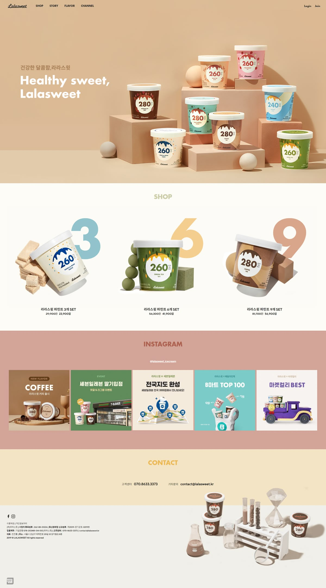

Profile
Name :Ms.Vasita Jaikaew
Nickname :Cream
Major :Digital and Information Technology
Section :1.2-1

เหตุผลที่อยากเรียน Full stack web development
- อยากเรียน Full Stack Web Development เพราะต้องการเข้าใจการทำงานของเว็บไซต์ทั้งส่วนหน้าบ้าน (Front-end)
และหลังบ้าน (Back-end)
อยากเรียน Full Stack Web Development เพราะต้องการเข้าใจการทำงานของเว็บไซต์ทั้งส่วนหน้าบ้าน (Front-end)
และหลังบ้าน (Back-end)
- คาดหวังว่าจะได้เรียนรู้ตั้งแต่พื้นฐานจนถึงการทำงานจริง
จุดอ่อนที่ต้องพัฒนาเกี่ยวกับทักษะ Programming และแนวทางการพัฒนา
- จุดอ่อน :การแก้ปัญหาด้วยโค้ดยังไม่คล่อง บางครั้งไม่เข้าใจโครงสร้างข้อมูลและเป็นคนเรียนรู้ช้า
- แนวทางการพัฒนา :การฝึกเขียนโปรแกรมบ่อย ๆ ศึกษาเพิ่มเติมจากแหล่งออนไลน์และทบทวนบ่อย
Websiteที่ชื่นชอบ
กลับไปด้านบน
